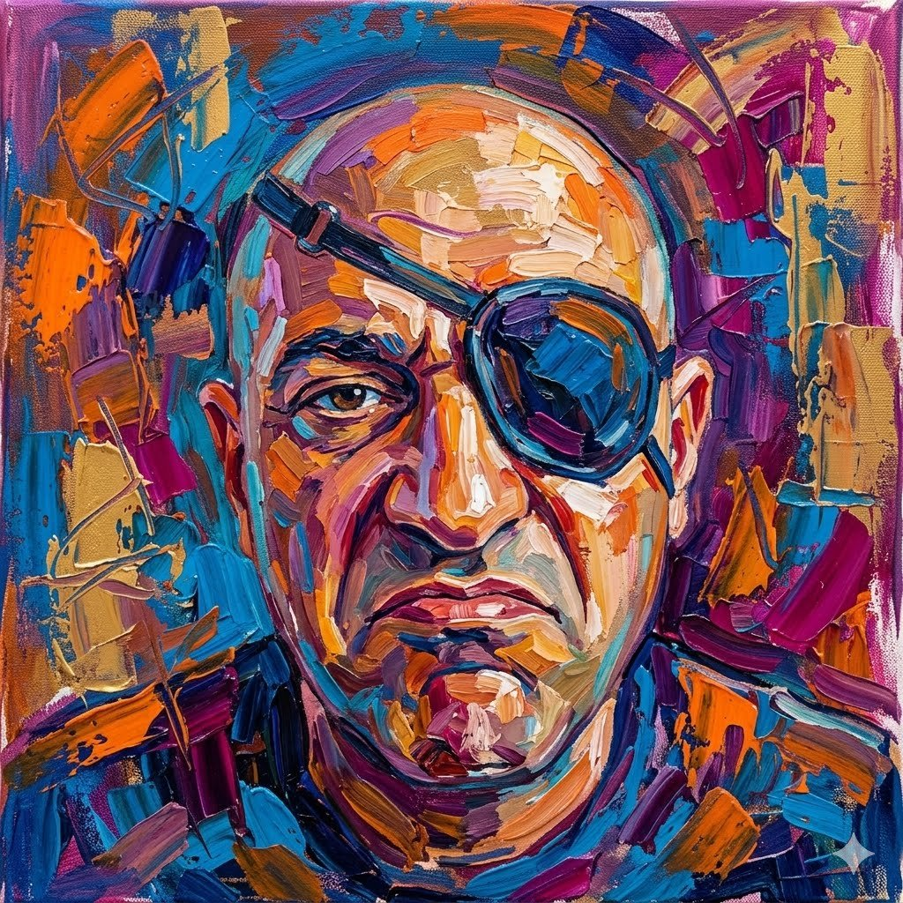

Asaf '26
Hello, I'm
Asaf
A full-stack developer who builds things on the internet. Currently under construction — much like this site.

A full-stack developer who builds things on the internet. Currently under construction — much like this site.